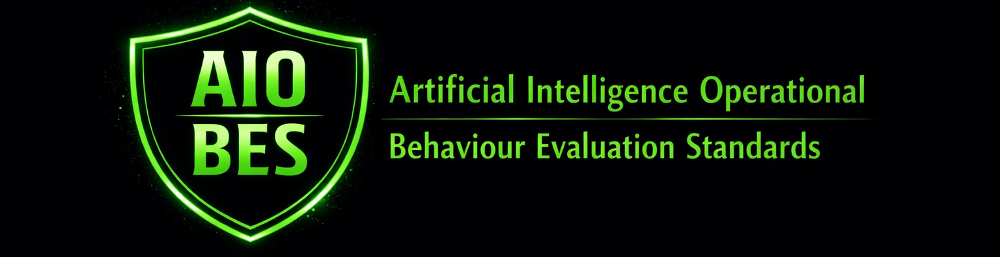

Artificial Intelligence Operational Behaviour Evaluation Standards (AIOBES)
Charter v1.0
AIOBES defines how Artificial Intelligence systems must be evaluated when used in real operational conditions. The standard establishes the behavioural criteria, evidence requirements and evaluation methodologies required to assess AI behaviour in real tasks, real workflows and real interactions. It provides the structured method needed to detect, document and evidence behavioural failures that create regulatory, legal, operational and reputational exposure.
AIOBES defines the principles, methodologies and evidence requirements necessary to evaluate AI behaviour in operational environments. It provides a formal framework for identifying workflow contamination, workflow collapse and additional behavioural failure modes that emerge only under real use.
AIOBES does not evaluate model architecture, training data, internal mechanisms or synthetic benchmark performance. It evaluates only operational behaviour: how the system behaves when people use it.
Artificial Intelligence systems do not expose their internal state, internal reasoning, latent representations or decision pathways. Their internal mechanisms cannot be directly inspected, verified or audited. For this reason, the only evidentiary surface available for evaluation is operational behaviour: what the system outputs, how it outputs it, and how those outputs change in response to real users and real workflow interactions.
AIOBES is based on the principle that behavioural evidence is the only reliable and observable indicator of system performance, stability, contamination, alignment and failure modes. All evaluation, documentation and auditability within AIOBES is grounded in this behavioural surface, derived from real tasks, real workflows and real interactions rather than synthetic or artificial test conditions.
AIOBES establishes:
AIOBES is a living standard. Its components shall evolve as behavioural evaluation practices mature, as AI systems change, as regulatory requirements develop, and as new operational use cases emerge. All updates shall follow the AIOBES versioning and change‑control process.
This Charter defines the purpose, scope and boundaries of the AIOBES standard and forms the foundation for all AIOBES components.